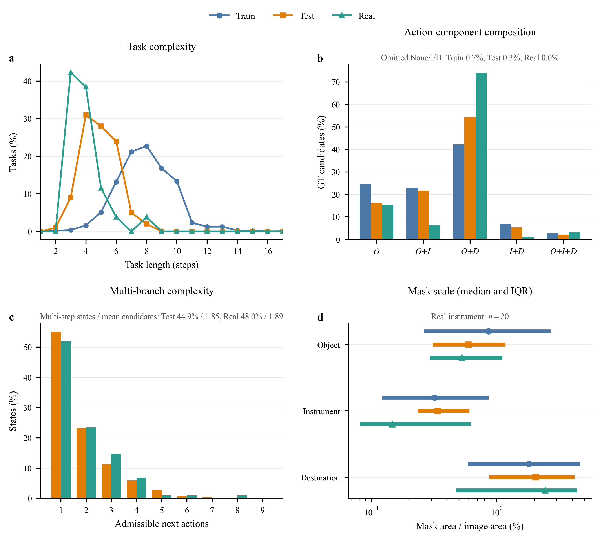
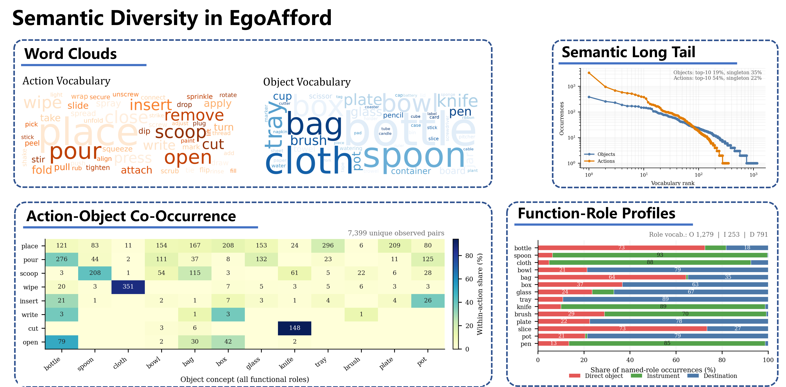
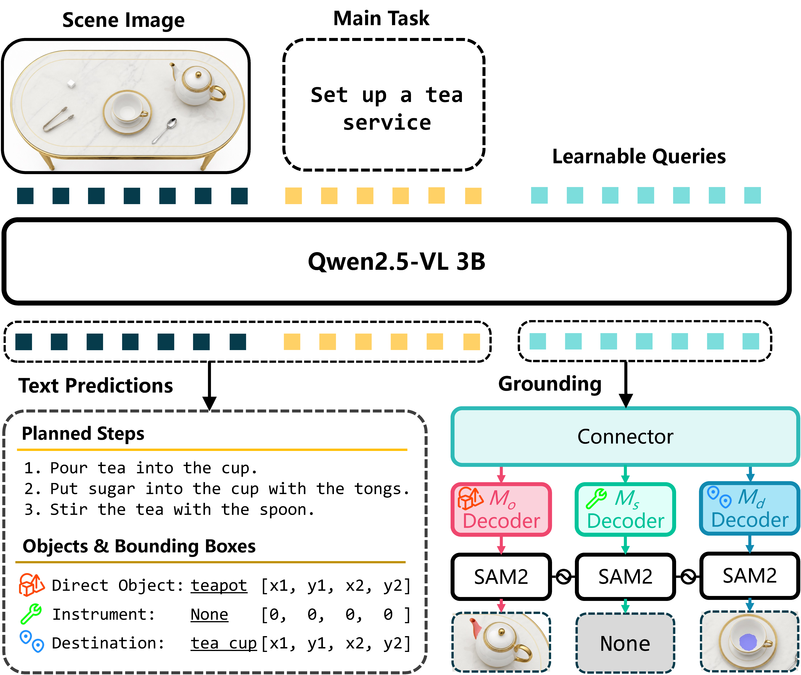

Part-level affordance grounding has advanced the localization of functional object regions associated with elemental actions. Extending this capability to complex tasks calls for connecting the semantic roles of participating objects with task-state-aligned visual observations and multi-step planning. We introduce EgoAfford, a benchmark designed to connect these three aspects. Given an egocentric observation and a high-level tabletop task, a model must generate the remaining plan and segment the functional regions of up to three components of the next action: the direct object, instrument, and destination. EgoAfford comprises approximately 15.5k human-verified images from 2,000 generated multi-step scenes, organized as semantically aligned, task-complete image series, together with EgoAfford-Real, 102 manually captured images spanning 26 tasks. We further present EgoLens, a 3B multimodal large language model with role-specific mask decoders, as an in-domain reference model for this joint task.
EgoAfford jointly studies task understanding, next-step planning, and role-conditioned part grounding in egocentric tabletop scenes.
A high-level goal unfolds as a state-dependent action sequence. The model infers what remains to be done from the current observation.
Every next action is grounded through three functional roles: direct object, instrument, and destination.
Semantically aligned image series preserve task state, making the connection between perception and planning explicit.
A task-complete benchmark of multi-step tabletop manipulation with human-verified, part-level role annotations.

Dataset composition across task states, object roles, and annotations.
15.5K
human-verified images
2,000
generated multi-step scenes
3
functional roles per action
102
real images across 26 tasks
Besides the generated scenes, EgoAfford-Real provides manually captured observations for evaluating transfer to real tabletop environments.

Diverse task states and object configurations in EgoAfford.
An in-domain 3B multimodal language model with role-specific mask decoders for joint next-step prediction and part-level grounding.

EgoLens takes a task goal and an egocentric observation, predicts the remaining plan, and grounds role-specific functional parts for the next action.
EgoLens conditions segmentation on the predicted next action and distinguishes the functional roles of participating objects.

Qualitative comparison on task-oriented affordance grounding. Please refer to the paper for complete experimental details and quantitative evaluation.
Paper, implementation, data, and model checkpoints for EgoAfford and EgoLens.
If you find EgoAfford useful, please cite the preprint.
@article{guan2026egoafford,
title = {EgoAfford: Task-Oriented Affordance Grounding via Egocentric Referring Segmentation},
author = {Guan, Xinyuan and Chen, Feifan and Zhan, Xinyu and Zhang, Fu-Cheng and Lu, Cewu and Yang, Lixin},
journal = {arXiv preprint arXiv:2608.04533},
year = {2026},
url = {https://arxiv.org/abs/2608.04533}
}
 Paper
Paper Code
Code Dataset
Dataset